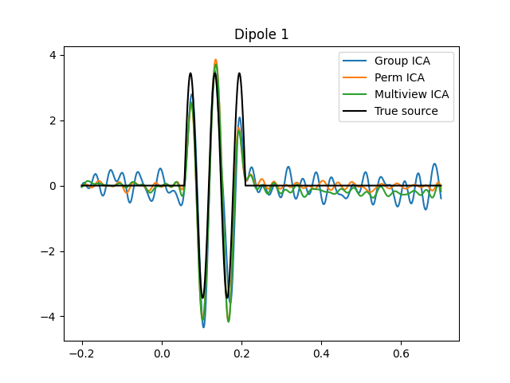

Note
Click here to download the full example code
Experitments on MEG Phantom data¶
- 


Out:
Opening raw data file /home/hugo/mne_data/MNE-brainstorm-data/bst_phantom_elekta/kojak_all_200nAm_pp_no_chpi_no_ms_raw.fif...
Read a total of 13 projection items:
planar-0.0-115.0-PCA-01 (1 x 306) idle
planar-0.0-115.0-PCA-02 (1 x 306) idle
planar-0.0-115.0-PCA-03 (1 x 306) idle
planar-0.0-115.0-PCA-04 (1 x 306) idle
planar-0.0-115.0-PCA-05 (1 x 306) idle
axial-0.0-115.0-PCA-01 (1 x 306) idle
axial-0.0-115.0-PCA-02 (1 x 306) idle
axial-0.0-115.0-PCA-03 (1 x 306) idle
axial-0.0-115.0-PCA-04 (1 x 306) idle
axial-0.0-115.0-PCA-05 (1 x 306) idle
axial-0.0-115.0-PCA-06 (1 x 306) idle
axial-0.0-115.0-PCA-07 (1 x 306) idle
axial-0.0-115.0-PCA-08 (1 x 306) idle
Range : 47000 ... 437999 = 47.000 ... 437.999 secs
Ready.
Current compensation grade : 0
645 events found
Event IDs: [ 1 2 3 4 5 6 7 8 9 10 11 12 13 14
15 16 17 18 19 20 21 22 23 24 25 26 27 28
29 30 31 32 256 768 1792 3840 7936]
101 of 101 T1/T2 magnetometer types replaced with T3.
Maxwell filtering raw data
Bad MEG channels being reconstructed: ['MEG2421']
Processing 204 gradiometers and 102 magnetometers
Using origin 0.0, 0.0, 0.0 mm in the head frame
Using 87/95 harmonic components for 0.000 (72/80 in, 15/15 out)
Loading raw data from disk
Processing 39 data chunks
[done]
Filtering raw data in 1 contiguous segment
Setting up band-pass filter from 1 - 40 Hz
FIR filter parameters
---------------------
Designing a one-pass, zero-phase, non-causal bandpass filter:
- Windowed time-domain design (firwin) method
- Hamming window with 0.0194 passband ripple and 53 dB stopband attenuation
- Lower passband edge: 1.00
- Lower transition bandwidth: 1.00 Hz (-6 dB cutoff frequency: 0.50 Hz)
- Upper passband edge: 40.00 Hz
- Upper transition bandwidth: 10.00 Hz (-6 dB cutoff frequency: 45.00 Hz)
- Filter length: 3301 samples (3.301 sec)
645 matching events found
Applying baseline correction (mode: mean)
Not setting metadata
0 projection items activated
Loading data for 645 events and 701 original time points ...
0 bad epochs dropped
it 1, loss = 1.5325e+02, g=1.0001e+00
it 2, loss = 1.1222e+02, g=1.0004e+00
it 3, loss = 7.2795e+01, g=1.0026e+00
it 4, loss = 3.8779e+01, g=1.0179e+00
it 5, loss = 1.7926e+01, g=1.0767e+00
it 6, loss = 1.2120e+01, g=1.1456e+00
it 7, loss = 1.1321e+01, g=1.0115e+00
it 8, loss = 1.1068e+01, g=8.7917e-01
it 9, loss = 1.0960e+01, g=7.0617e-01
it 10, loss = 1.0914e+01, g=5.1509e-01
it 11, loss = 1.0893e+01, g=3.6590e-01
it 12, loss = 1.0883e+01, g=2.5779e-01
it 13, loss = 1.0879e+01, g=1.8096e-01
it 14, loss = 1.0877e+01, g=1.2682e-01
it 15, loss = 1.0876e+01, g=8.8804e-02
it 16, loss = 1.0875e+01, g=6.2155e-02
it 17, loss = 1.0875e+01, g=4.3491e-02
it 18, loss = 1.0875e+01, g=3.0427e-02
it 19, loss = 1.0875e+01, g=2.1285e-02
it 20, loss = 1.0875e+01, g=1.4889e-02
it 21, loss = 1.0875e+01, g=1.0414e-02
it 22, loss = 1.0875e+01, g=7.2844e-03
it 23, loss = 1.0875e+01, g=5.0950e-03
it 24, loss = 1.0875e+01, g=3.5636e-03
it 25, loss = 1.0875e+01, g=2.4925e-03
it 26, loss = 1.0875e+01, g=1.7433e-03
it 27, loss = 1.0875e+01, g=1.2193e-03
it 28, loss = 1.0875e+01, g=8.5281e-04
it 1, loss = 8.2681e+00, g=6.0621e-01
it 2, loss = 5.1516e+00, g=1.7809e+00
it 3, loss = 3.7138e+00, g=6.0520e-01
it 4, loss = 2.7843e+00, g=6.3561e-01
it 5, loss = 2.1807e+00, g=3.8869e-01
it 6, loss = 1.8225e+00, g=3.5063e-01
it 7, loss = 1.6366e+00, g=2.9238e-01
it 8, loss = 1.5732e+00, g=2.5103e-01
it 9, loss = 1.5096e+00, g=2.1045e-01
it 10, loss = 1.4152e+00, g=1.8086e-01
it 11, loss = 1.2856e+00, g=1.5460e-01
it 12, loss = 1.1721e+00, g=1.3437e-01
it 13, loss = 1.0814e+00, g=1.1481e-01
it 14, loss = 1.0158e+00, g=9.8855e-02
it 15, loss = 9.6790e-01, g=8.4192e-02
it 16, loss = 9.2361e-01, g=7.2168e-02
it 17, loss = 8.9125e-01, g=6.1777e-02
it 18, loss = 8.6386e-01, g=5.3152e-02
it 19, loss = 8.4083e-01, g=5.0726e-02
it 20, loss = 8.2240e-01, g=4.2617e-02
it 21, loss = 8.0621e-01, g=3.4033e-02
it 22, loss = 7.9177e-01, g=2.9440e-02
it 23, loss = 7.7916e-01, g=2.5019e-02
it 24, loss = 7.6757e-01, g=2.3590e-02
it 25, loss = 7.5706e-01, g=2.2850e-02
it 26, loss = 7.4739e-01, g=2.0256e-02
it 27, loss = 7.3856e-01, g=2.0941e-02
it 28, loss = 7.3046e-01, g=1.7889e-02
it 29, loss = 7.2302e-01, g=1.8785e-02
it 30, loss = 7.1605e-01, g=2.1105e-02
it 31, loss = 7.0957e-01, g=1.9690e-02
it 32, loss = 7.0354e-01, g=1.8056e-02
it 33, loss = 6.9800e-01, g=1.4946e-02
it 34, loss = 6.9283e-01, g=1.4871e-02
it 35, loss = 6.8797e-01, g=1.4557e-02
it 36, loss = 6.8337e-01, g=1.5058e-02
it 37, loss = 6.7903e-01, g=1.3122e-02
it 38, loss = 6.7489e-01, g=1.1862e-02
it 39, loss = 6.7091e-01, g=1.1868e-02
it 40, loss = 6.6707e-01, g=1.1591e-02
it 41, loss = 6.6335e-01, g=1.1585e-02
it 42, loss = 6.5975e-01, g=1.0759e-02
it 43, loss = 6.5627e-01, g=1.0741e-02
it 44, loss = 6.5290e-01, g=1.0132e-02
it 45, loss = 6.4964e-01, g=1.0112e-02
it 46, loss = 6.4648e-01, g=1.0376e-02
it 47, loss = 6.4342e-01, g=1.0361e-02
it 48, loss = 6.4047e-01, g=1.0699e-02
it 49, loss = 6.3762e-01, g=1.0668e-02
it 50, loss = 6.3487e-01, g=1.0898e-02
it 51, loss = 6.3220e-01, g=1.0762e-02
it 52, loss = 6.2962e-01, g=1.0791e-02
it 53, loss = 6.2711e-01, g=1.0526e-02
it 54, loss = 6.2467e-01, g=1.0413e-02
it 55, loss = 6.2230e-01, g=1.0096e-02
it 56, loss = 6.1997e-01, g=9.8957e-03
it 57, loss = 6.1769e-01, g=9.5471e-03
it 58, loss = 6.1543e-01, g=9.3294e-03
it 59, loss = 6.1319e-01, g=9.0950e-03
it 60, loss = 6.1097e-01, g=9.3384e-03
it 61, loss = 6.0875e-01, g=9.0621e-03
it 62, loss = 6.0653e-01, g=9.3125e-03
it 63, loss = 6.0430e-01, g=9.0637e-03
it 64, loss = 6.0207e-01, g=9.2541e-03
it 65, loss = 5.9982e-01, g=8.8970e-03
it 66, loss = 5.9756e-01, g=8.9702e-03
it 67, loss = 5.9529e-01, g=8.6821e-03
it 68, loss = 5.9301e-01, g=8.6623e-03
it 69, loss = 5.9073e-01, g=8.3960e-03
it 70, loss = 5.8844e-01, g=8.3251e-03
it 71, loss = 5.8616e-01, g=8.1081e-03
it 72, loss = 5.8388e-01, g=8.5399e-03
it 73, loss = 5.8161e-01, g=8.5934e-03
it 74, loss = 5.7936e-01, g=9.0108e-03
it 75, loss = 5.7712e-01, g=8.9774e-03
it 76, loss = 5.7491e-01, g=9.3739e-03
it 77, loss = 5.7272e-01, g=9.3170e-03
it 78, loss = 5.7056e-01, g=9.6785e-03
it 79, loss = 5.6843e-01, g=9.5172e-03
it 80, loss = 5.6633e-01, g=9.7722e-03
it 81, loss = 5.6427e-01, g=9.5100e-03
it 82, loss = 5.6225e-01, g=9.7257e-03
it 83, loss = 5.6026e-01, g=9.4224e-03
it 84, loss = 5.5833e-01, g=9.5909e-03
it 85, loss = 5.5643e-01, g=9.1838e-03
it 86, loss = 5.5460e-01, g=9.2556e-03
it 87, loss = 5.5281e-01, g=8.7645e-03
it 88, loss = 5.5108e-01, g=8.8131e-03
it 89, loss = 5.4940e-01, g=8.3009e-03
it 90, loss = 5.4778e-01, g=8.3268e-03
it 91, loss = 5.4622e-01, g=7.7489e-03
it 92, loss = 5.4471e-01, g=7.7224e-03
it 93, loss = 5.4327e-01, g=7.1093e-03
it 94, loss = 5.4188e-01, g=7.1002e-03
it 95, loss = 5.4055e-01, g=6.6063e-03
it 96, loss = 5.3927e-01, g=6.5953e-03
it 97, loss = 5.3805e-01, g=6.4342e-03
it 98, loss = 5.3687e-01, g=6.3495e-03
it 99, loss = 5.3575e-01, g=6.2085e-03
it 100, loss = 5.3467e-01, g=6.0878e-03
it 101, loss = 5.3363e-01, g=5.9863e-03
it 102, loss = 5.3264e-01, g=5.8132e-03
it 103, loss = 5.3168e-01, g=5.6852e-03
it 104, loss = 5.3075e-01, g=5.4716e-03
it 105, loss = 5.2986e-01, g=5.3637e-03
it 106, loss = 5.2900e-01, g=5.1347e-03
it 107, loss = 5.2817e-01, g=5.1572e-03
it 108, loss = 5.2736e-01, g=5.0230e-03
it 109, loss = 5.2657e-01, g=5.0703e-03
it 110, loss = 5.2580e-01, g=4.9270e-03
it 111, loss = 5.2506e-01, g=4.9757e-03
it 112, loss = 5.2433e-01, g=4.9617e-03
it 113, loss = 5.2362e-01, g=4.9251e-03
it 114, loss = 5.2292e-01, g=5.2248e-03
it 115, loss = 5.2224e-01, g=5.1681e-03
it 116, loss = 5.2157e-01, g=5.4735e-03
it 117, loss = 5.2092e-01, g=5.4070e-03
it 118, loss = 5.2028e-01, g=5.7137e-03
it 119, loss = 5.1966e-01, g=5.6557e-03
it 120, loss = 5.1905e-01, g=5.9065e-03
it 121, loss = 5.1845e-01, g=5.8511e-03
it 122, loss = 5.1786e-01, g=6.0653e-03
it 123, loss = 5.1729e-01, g=6.0148e-03
it 124, loss = 5.1673e-01, g=6.1849e-03
it 125, loss = 5.1619e-01, g=6.1160e-03
it 126, loss = 5.1566e-01, g=6.2384e-03
it 127, loss = 5.1515e-01, g=6.1517e-03
it 128, loss = 5.1464e-01, g=6.2557e-03
it 129, loss = 5.1416e-01, g=6.1524e-03
it 130, loss = 5.1368e-01, g=6.2251e-03
it 131, loss = 5.1322e-01, g=6.0888e-03
it 132, loss = 5.1278e-01, g=6.1404e-03
it 133, loss = 5.1234e-01, g=5.9831e-03
it 134, loss = 5.1192e-01, g=6.0377e-03
it 135, loss = 5.1151e-01, g=5.8582e-03
it 136, loss = 5.1111e-01, g=5.8979e-03
it 137, loss = 5.1073e-01, g=5.6884e-03
it 138, loss = 5.1035e-01, g=5.7320e-03
it 139, loss = 5.0999e-01, g=5.5093e-03
it 140, loss = 5.0964e-01, g=5.5678e-03
it 141, loss = 5.0930e-01, g=5.3259e-03
it 142, loss = 5.0896e-01, g=5.3798e-03
it 143, loss = 5.0864e-01, g=5.1185e-03
it 144, loss = 5.0832e-01, g=5.1908e-03
it 145, loss = 5.0802e-01, g=4.9251e-03
it 146, loss = 5.0772e-01, g=5.0120e-03
it 147, loss = 5.0742e-01, g=4.7317e-03
it 148, loss = 5.0714e-01, g=4.8185e-03
it 149, loss = 5.0686e-01, g=4.5297e-03
it 150, loss = 5.0659e-01, g=4.6389e-03
it 151, loss = 5.0633e-01, g=4.3508e-03
it 152, loss = 5.0607e-01, g=4.4680e-03
it 153, loss = 5.0581e-01, g=4.1691e-03
it 154, loss = 5.0556e-01, g=4.2883e-03
it 155, loss = 5.0532e-01, g=3.9891e-03
it 156, loss = 5.0508e-01, g=4.1289e-03
it 157, loss = 5.0485e-01, g=3.8318e-03
it 158, loss = 5.0462e-01, g=3.9717e-03
it 159, loss = 5.0439e-01, g=3.6670e-03
it 160, loss = 5.0416e-01, g=3.8113e-03
it 161, loss = 5.0394e-01, g=3.5115e-03
it 162, loss = 5.0373e-01, g=3.6718e-03
it 163, loss = 5.0351e-01, g=3.3729e-03
it 164, loss = 5.0330e-01, g=3.5280e-03
it 165, loss = 5.0309e-01, g=3.2247e-03
it 166, loss = 5.0288e-01, g=3.3873e-03
it 167, loss = 5.0268e-01, g=3.0913e-03
it 168, loss = 5.0247e-01, g=3.2641e-03
it 169, loss = 5.0227e-01, g=2.9968e-03
it 170, loss = 5.0207e-01, g=3.1326e-03
it 171, loss = 5.0187e-01, g=3.0574e-03
it 172, loss = 5.0167e-01, g=3.1362e-03
it 173, loss = 5.0147e-01, g=3.1115e-03
it 174, loss = 5.0127e-01, g=3.1863e-03
it 175, loss = 5.0107e-01, g=3.1581e-03
it 176, loss = 5.0087e-01, g=3.2386e-03
it 177, loss = 5.0067e-01, g=3.2207e-03
it 178, loss = 5.0047e-01, g=3.3035e-03
it 179, loss = 5.0028e-01, g=3.2705e-03
it 180, loss = 5.0008e-01, g=3.3510e-03
it 181, loss = 4.9987e-01, g=3.3206e-03
it 182, loss = 4.9967e-01, g=3.4085e-03
it 183, loss = 4.9947e-01, g=3.3820e-03
it 184, loss = 4.9927e-01, g=3.4705e-03
it 185, loss = 4.9906e-01, g=3.4277e-03
it 186, loss = 4.9886e-01, g=3.5168e-03
it 187, loss = 4.9865e-01, g=3.4801e-03
it 188, loss = 4.9844e-01, g=3.5776e-03
it 189, loss = 4.9823e-01, g=3.5366e-03
it 190, loss = 4.9801e-01, g=3.6341e-03
it 191, loss = 4.9780e-01, g=3.5860e-03
it 192, loss = 4.9758e-01, g=3.6798e-03
it 193, loss = 4.9736e-01, g=3.6344e-03
it 194, loss = 4.9714e-01, g=3.7405e-03
it 195, loss = 4.9691e-01, g=3.6935e-03
it 196, loss = 4.9669e-01, g=3.7895e-03
it 197, loss = 4.9646e-01, g=3.7347e-03
it 198, loss = 4.9623e-01, g=3.8343e-03
it 199, loss = 4.9600e-01, g=3.7808e-03
it 200, loss = 4.9577e-01, g=3.8908e-03
it 201, loss = 4.9553e-01, g=3.8308e-03
it 202, loss = 4.9529e-01, g=3.9312e-03
it 203, loss = 4.9505e-01, g=3.8629e-03
it 204, loss = 4.9481e-01, g=3.9739e-03
it 205, loss = 4.9457e-01, g=3.9049e-03
it 206, loss = 4.9432e-01, g=4.0224e-03
it 207, loss = 4.9407e-01, g=3.9428e-03
it 208, loss = 4.9383e-01, g=4.0539e-03
it 209, loss = 4.9358e-01, g=3.9665e-03
it 210, loss = 4.9333e-01, g=4.0926e-03
it 211, loss = 4.9307e-01, g=4.0016e-03
it 212, loss = 4.9282e-01, g=4.1301e-03
it 213, loss = 4.9257e-01, g=4.0259e-03
it 214, loss = 4.9232e-01, g=4.1526e-03
it 215, loss = 4.9206e-01, g=4.0415e-03
it 216, loss = 4.9181e-01, g=4.1847e-03
it 217, loss = 4.9155e-01, g=4.0670e-03
it 218, loss = 4.9130e-01, g=4.2090e-03
it 219, loss = 4.9104e-01, g=4.0769e-03
it 220, loss = 4.9079e-01, g=4.2221e-03
it 221, loss = 4.9054e-01, g=4.0840e-03
it 222, loss = 4.9028e-01, g=4.2444e-03
it 223, loss = 4.9003e-01, g=4.0969e-03
it 224, loss = 4.8978e-01, g=4.2535e-03
it 225, loss = 4.8953e-01, g=4.0920e-03
it 226, loss = 4.8928e-01, g=4.2563e-03
it 227, loss = 4.8903e-01, g=4.0894e-03
it 228, loss = 4.8879e-01, g=4.2653e-03
it 229, loss = 4.8854e-01, g=4.0869e-03
it 230, loss = 4.8830e-01, g=4.2579e-03
it 231, loss = 4.8806e-01, g=4.0673e-03
it 232, loss = 4.8782e-01, g=4.2490e-03
it 233, loss = 4.8758e-01, g=4.0533e-03
it 234, loss = 4.8735e-01, g=4.2418e-03
it 235, loss = 4.8711e-01, g=4.0336e-03
it 236, loss = 4.8688e-01, g=4.2176e-03
it 237, loss = 4.8665e-01, g=3.9999e-03
it 238, loss = 4.8643e-01, g=4.1960e-03
it 239, loss = 4.8620e-01, g=3.9732e-03
it 240, loss = 4.8598e-01, g=4.1710e-03
it 241, loss = 4.8576e-01, g=3.9362e-03
it 242, loss = 4.8554e-01, g=4.1313e-03
it 243, loss = 4.8532e-01, g=3.8902e-03
it 244, loss = 4.8511e-01, g=4.0967e-03
it 245, loss = 4.8490e-01, g=3.8506e-03
it 246, loss = 4.8469e-01, g=4.0548e-03
it 247, loss = 4.8448e-01, g=3.7983e-03
it 248, loss = 4.8428e-01, g=4.0116e-03
it 249, loss = 4.8408e-01, g=3.7427e-03
it 250, loss = 4.8388e-01, g=4.0316e-03
it 251, loss = 4.8368e-01, g=3.6916e-03
it 252, loss = 4.8349e-01, g=4.0541e-03
it 253, loss = 4.8329e-01, g=3.7003e-03
it 254, loss = 4.8310e-01, g=4.0742e-03
it 255, loss = 4.8291e-01, g=3.7196e-03
it 256, loss = 4.8273e-01, g=4.0889e-03
it 257, loss = 4.8254e-01, g=3.7371e-03
it 258, loss = 4.8236e-01, g=4.1070e-03
it 259, loss = 4.8218e-01, g=3.7577e-03
it 260, loss = 4.8200e-01, g=4.1211e-03
it 261, loss = 4.8183e-01, g=3.7726e-03
it 262, loss = 4.8165e-01, g=4.1323e-03
it 263, loss = 4.8148e-01, g=3.7881e-03
it 264, loss = 4.8131e-01, g=4.1466e-03
it 265, loss = 4.8114e-01, g=3.8052e-03
it 266, loss = 4.8098e-01, g=4.1559e-03
it 267, loss = 4.8081e-01, g=3.8170e-03
it 268, loss = 4.8065e-01, g=4.1647e-03
it 269, loss = 4.8049e-01, g=3.8310e-03
it 270, loss = 4.8033e-01, g=4.1754e-03
it 271, loss = 4.8017e-01, g=3.8447e-03
it 272, loss = 4.8002e-01, g=4.1808e-03
it 273, loss = 4.7986e-01, g=3.8541e-03
it 274, loss = 4.7971e-01, g=4.1874e-03
it 275, loss = 4.7955e-01, g=3.8662e-03
it 276, loss = 4.7941e-01, g=4.1938e-03
it 277, loss = 4.7926e-01, g=3.8760e-03
it 278, loss = 4.7911e-01, g=4.1955e-03
it 279, loss = 4.7897e-01, g=3.8827e-03
it 280, loss = 4.7883e-01, g=4.1988e-03
it 281, loss = 4.7868e-01, g=3.8916e-03
it 282, loss = 4.7855e-01, g=4.1998e-03
it 283, loss = 4.7841e-01, g=3.8964e-03
it 284, loss = 4.7827e-01, g=4.1968e-03
it 285, loss = 4.7814e-01, g=3.8993e-03
it 286, loss = 4.7800e-01, g=4.1950e-03
it 287, loss = 4.7787e-01, g=3.9028e-03
it 288, loss = 4.7774e-01, g=4.1890e-03
it 289, loss = 4.7762e-01, g=3.9013e-03
it 290, loss = 4.7749e-01, g=4.1799e-03
it 291, loss = 4.7737e-01, g=3.8985e-03
it 292, loss = 4.7725e-01, g=4.1706e-03
it 293, loss = 4.7712e-01, g=3.8944e-03
it 294, loss = 4.7701e-01, g=4.1559e-03
it 295, loss = 4.7689e-01, g=3.8848e-03
it 296, loss = 4.7678e-01, g=4.1388e-03
it 297, loss = 4.7666e-01, g=3.8743e-03
it 298, loss = 4.7655e-01, g=4.1199e-03
it 299, loss = 4.7644e-01, g=3.8607e-03
it 300, loss = 4.7634e-01, g=4.0953e-03
it 301, loss = 4.7623e-01, g=3.8421e-03
it 302, loss = 4.7613e-01, g=4.0688e-03
it 303, loss = 4.7603e-01, g=3.8223e-03
it 304, loss = 4.7594e-01, g=4.0392e-03
it 305, loss = 4.7584e-01, g=3.7983e-03
it 306, loss = 4.7575e-01, g=4.0042e-03
it 307, loss = 4.7566e-01, g=3.7700e-03
it 308, loss = 4.7557e-01, g=3.9678e-03
it 309, loss = 4.7548e-01, g=3.7405e-03
it 310, loss = 4.7540e-01, g=3.9275e-03
it 311, loss = 4.7531e-01, g=3.7062e-03
it 312, loss = 4.7524e-01, g=3.8829e-03
it 313, loss = 4.7516e-01, g=3.6690e-03
it 314, loss = 4.7508e-01, g=3.8374e-03
it 315, loss = 4.7501e-01, g=3.6304e-03
it 316, loss = 4.7494e-01, g=3.7878e-03
it 317, loss = 4.7487e-01, g=3.5875e-03
it 318, loss = 4.7480e-01, g=3.7358e-03
it 319, loss = 4.7474e-01, g=3.5432e-03
it 320, loss = 4.7468e-01, g=3.6830e-03
it 321, loss = 4.7462e-01, g=3.4974e-03
it 322, loss = 4.7456e-01, g=3.6269e-03
it 323, loss = 4.7450e-01, g=3.4526e-03
it 324, loss = 4.7445e-01, g=3.5701e-03
it 325, loss = 4.7440e-01, g=3.4824e-03
it 326, loss = 4.7435e-01, g=3.5282e-03
it 327, loss = 4.7430e-01, g=3.5100e-03
it 328, loss = 4.7426e-01, g=3.5533e-03
it 329, loss = 4.7421e-01, g=3.5368e-03
it 330, loss = 4.7417e-01, g=3.5793e-03
it 331, loss = 4.7413e-01, g=3.5643e-03
it 332, loss = 4.7409e-01, g=3.6037e-03
it 333, loss = 4.7406e-01, g=3.5896e-03
it 334, loss = 4.7402e-01, g=3.6273e-03
it 335, loss = 4.7399e-01, g=3.6154e-03
it 336, loss = 4.7396e-01, g=3.6520e-03
it 337, loss = 4.7393e-01, g=3.6414e-03
it 338, loss = 4.7390e-01, g=3.6751e-03
it 339, loss = 4.7387e-01, g=3.6659e-03
it 340, loss = 4.7385e-01, g=3.6985e-03
it 341, loss = 4.7382e-01, g=3.6916e-03
it 342, loss = 4.7380e-01, g=3.7344e-03
it 343, loss = 4.7378e-01, g=3.7311e-03
it 344, loss = 4.7364e-01, g=3.7904e-03
it 345, loss = 4.7341e-01, g=4.7972e-03
it 346, loss = 4.7339e-01, g=2.9304e-03
it 347, loss = 4.7337e-01, g=2.4908e-03
it 348, loss = 4.7335e-01, g=2.7854e-03
it 349, loss = 4.7332e-01, g=2.5272e-03
it 350, loss = 4.7324e-01, g=2.6731e-03
it 351, loss = 4.7322e-01, g=1.4458e-03
it 352, loss = 4.7321e-01, g=2.0830e-03
it 353, loss = 4.7319e-01, g=1.9531e-03
it 354, loss = 4.7317e-01, g=1.6743e-03
it 355, loss = 4.7315e-01, g=1.5471e-03
it 356, loss = 4.7314e-01, g=1.5143e-03
it 357, loss = 4.7312e-01, g=1.5350e-03
it 358, loss = 4.7311e-01, g=1.9173e-03
it 359, loss = 4.7310e-01, g=1.7418e-03
it 360, loss = 4.7308e-01, g=1.5594e-03
it 361, loss = 4.7307e-01, g=1.3994e-03
it 362, loss = 4.7306e-01, g=1.3738e-03
it 363, loss = 4.7305e-01, g=1.6141e-03
it 364, loss = 4.7304e-01, g=1.7405e-03
it 365, loss = 4.7303e-01, g=1.4410e-03
it 366, loss = 4.7302e-01, g=1.4179e-03
it 367, loss = 4.7301e-01, g=1.4340e-03
it 368, loss = 4.7300e-01, g=1.5160e-03
it 369, loss = 4.7299e-01, g=1.6180e-03
it 370, loss = 4.7298e-01, g=1.5804e-03
it 371, loss = 4.7298e-01, g=1.2707e-03
it 372, loss = 4.7297e-01, g=1.4552e-03
it 373, loss = 4.7296e-01, g=1.3621e-03
it 374, loss = 4.7294e-01, g=1.5720e-03
it 375, loss = 4.7293e-01, g=8.9075e-04
/home/hugo/Research/multiviewica/examples/plot_meg_phantom_experiment.py:116: UserWarning: Matplotlib is currently using agg, which is a non-GUI backend, so cannot show the figure.
plt.show()
# Authors: Hugo Richard, Pierre Ablin
# License: BSD 3 clause
import os.path as op
import numpy as np
import matplotlib.pyplot as plt
import mne
from mne import find_events
from mne.datasets.brainstorm import bst_phantom_elekta
from mne.io import read_raw_fif
from multiviewica import multiviewica, permica, groupica
data_path = bst_phantom_elekta.data_path()
raw_fname = op.join(data_path, "kojak_all_200nAm_pp_no_chpi_no_ms_raw.fif")
raw = read_raw_fif(raw_fname)
# Delete bad sensor
events = find_events(raw, "STI201")
raw.info["bads"] = ["MEG2421"]
# Filter
raw.fix_mag_coil_types()
raw = mne.preprocessing.maxwell_filter(raw, origin=(0.0, 0.0, 0.0))
raw.filter(1.0, 40.0)
# Select magnometers
picks = mne.pick_types(raw.info, meg="mag")
# Epoch signals
tmin, tmax = -0.2, 0.5
epochs = mne.Epochs(
raw,
events,
None,
tmin,
tmax,
picks=picks,
baseline=(None, 0),
preload=True,
)
# Get data from two consecutive epochs
n_epochs = 1
n_dipoles = 3
X = np.array(
[
np.hstack(epochs[str(i)].get_data()[1: 1 + n_epochs])
for i in range(1, 1 + n_dipoles)
]
)
# Normalize
X /= np.std(X)
# Apply individual PCA
dim = 20
# Get sources with multiviewICA
K_m, W_m, S_multiview = multiviewica(
X,
verbose=True,
n_components=dim,
dimension_reduction="pca",
random_state=0,
)
K_g, W_g, S_group = groupica(
X, n_components=dim, dimension_reduction="pca", random_state=0
)
K_p, W_p, S_perm = permica(
X, n_components=dim, dimension_reduction="pca", random_state=0
)
S_m = [np.dot(W, K.dot(x)) for K, W, x in zip(K_m, W_m, X)]
S_g = [np.dot(W, K.dot(x)) for K, W, x in zip(K_g, W_g, X)]
S_p = [np.dot(W, K.dot(x)) for K, W, x in zip(K_p, W_p, X)]
# Compute true source
true_source = np.zeros(701)
true_source[200:320] = np.sin(np.linspace(0, 5 * np.pi, 120))
true_source /= np.std(true_source)
true_source = np.tile(true_source, n_epochs)
def find_best_source(S):
S /= np.std(S, axis=1)[:, None]
corr = np.dot(S, true_source)
source_idx = np.argmax(np.abs(corr))
return S[source_idx] * np.sign(corr[source_idx])
time = np.linspace(-0.2, 0.7 * n_epochs, len(true_source))
for i in range(n_dipoles):
plt.figure()
for S, name in zip(
[S_g, S_p, S_m], ["Group ICA", "Perm ICA", "Multiview ICA"]
):
plt.plot(time, find_best_source(S[i]), label=name)
plt.plot(time, true_source, label="True source", color="k")
plt.title("Dipole %d" % (i + 1))
plt.legend()
plt.show()
Total running time of the script: ( 0 minutes 19.206 seconds)